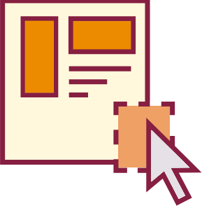

What You Will Learn and Practice
- Analyze the rhetorical situation and determine the appropriate audience or users of written communication, considering the needs of global audiences and people with disabilities. [CLO 1]
- Conduct research appropriate to workplace problem solving, such as literature review, evaluation of online resources, interview, and site inspection. [CLO 2]
- Interpret research findings with understanding of ethical and human implications. [CLO 3]
- Use conventions of various workplace genres, such as proposals, instructions, correspondence, reports, and slide decks, with understanding of how the genre conventions can be used as heuristics and as principles of arrangement. [CLO 4]
What I Want You to Do
Compose a visualization with accompanying descriptive explanation of the research process that you have followed while working on your recommendation report. You will incorporate your description into the Methods section of your recommendation report later in the term.
Why I Want You to Do It
Visualizing a process for someone who is unfamiliar with it requires you to think from someone else’s perspective. You have to outline exactly what the process entails so that your readers understand. Additionally, tracking and describing your research process as you complete your secondary and primary research will also give you the basic information you need for the Methods section of your report.
Where You Can Find Help
- From Markel & Selber:
- Chapter 20, “Writing Descriptions,” pp. 561–569, and Figure 20.8, “An Effective Process Description,” p. 571.
- Chapter 12, “Creating Graphics” (Skim through for examples of visualizations).
- Chapter 16, “Why and How To Create a Gantt Chart,” p. 451.
- From Course Resources:
When to Do It
- Suggested Due Date: By 11:59 PM on Friday, September 17, 2021 to submit for feedback from me and your classmates.
- Second-Chance Due Date: By 11:59 PM on Wednesday, September 22, 2021 to submit for feedback from me and your classmates.
- Best Submission Due Date: By 11:59 PM on Tuesday, October 5, 2021 (extended from Friday due to Fall Break).
- Last Chance Date: The grace period for your research description ends at 11:59 PM on Friday, December 3, 2021.
How You Do It
Work on Your Description Draft
- Review the Research Description Criteria to understand the requirements of your finished draft.
- Explore the options for visualizing your research process:
- The resources in the “Where You Can Find Help” section above.
- Resources from your major. For instance, a computer science major will know where to find details on flowcharts.
- Infographic templates on sites like Canva, Venngage, or Easel.ly.
-
Choosing How to Work
Choose a tool that you are comfortable with. While the visualization needs to be clear, you don’t need to learn new software for this project. Use what you know.
Decide how you which option you will use to compose your description:
- Software that will create a JPG, PNG, PDF, or DOCX file.
- Web-based tools that will provide a public link to your work (like Google Drive).
- Old-school paper and pen/pencils that you will take a photo of and then submit the image.
- Keep track of your process as you conduct your research:
- Begin with your research topic as the starting place for the process.
- Branch your research into secondary research and primary research.
- Add details on the research you conduct beyond that point.
- Add notes on your process as you work, rather than coming back at the end and trying to remember everything.
- Check your process notes against your work logs, and add any information to your draft.
- Complete the Introducing Your Research Description to begin gathering the relevant information for your description.
- Use the Introducing Your Research Description activity to add the descriptive text to your visualization.
Improve Your Description Draft
The following activities will all contribute to your Technical Description and to the Methods section of your Recommendation Report. You can complete all of these activities, or you can pick and choose—just be sure that you put in your best work and record what you do in your work log.
- Share your current draft in the Research Description Feedback Discussion. Next week, use the feedback you receive to revise your work.
- If you missed the original chance for feedback, try the Second-Chance Research Description Feedback Discussion.
- Continue to develop your draft, recording all the details on your process until your research is complete.
How to Assess & Track Your Work
You track and grade your own work in this course. Be sure to complete the following tasks:
- Track your work in your Weekly Work Log.
- I will give you feedback when you turn in your description to one of the feedback discussions.
Since this is a part of the working draft for your Technical Description, you do not turn it in separately.